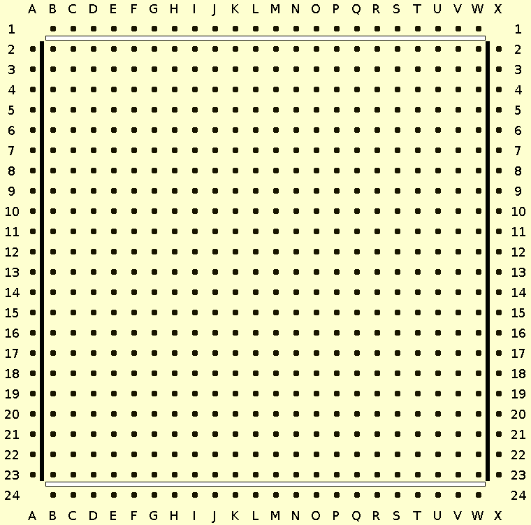
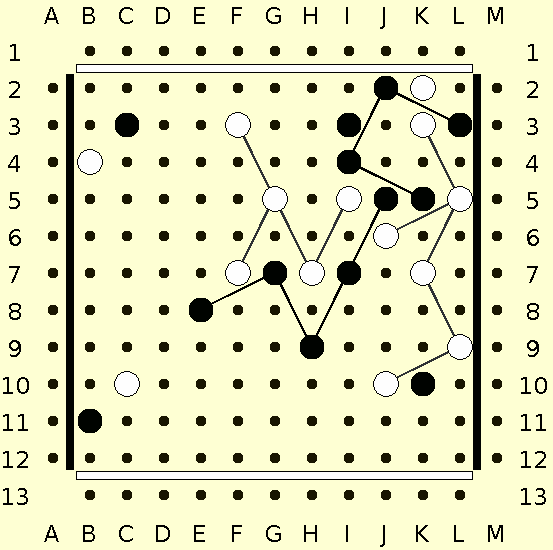
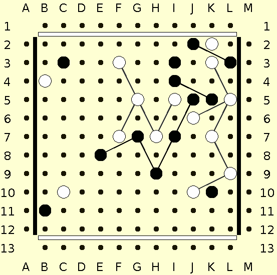
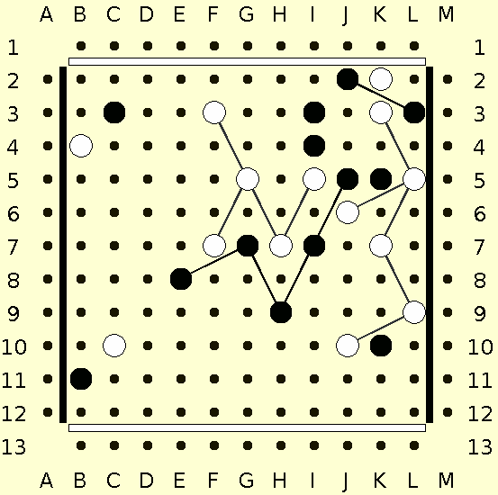
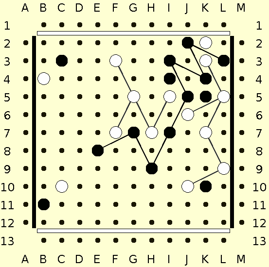

![[SGF FF[4] - Smart Game Format]](images/head.png) last updated: 2021-12-01
last updated: 2021-12-01
These specifications are intended as a standard for game and puzzle files used by Twixt programs.
As of December 2021, the original specification hadn't caught on as much as hoped. Therefore the current revision was made in the hope to gain a stronger following in the future.
The main change has to do with "long" moves, in which one or more links are removed, or one or more links are manually added to pegs that were already on the board, or both. The notation now follows Alan Hensel's standard.
One thing that is not changed, is the syntax for ordinary moves. It is still letter number, or letter letter number for horizontal grid sizes beyond 26. Automatic addition of all legal links to the peg placed is assumed and need not be mentioned in the notation, not even for a long move.
All game-specific property values are case insensitive.
The default board size is 24 x 24. The minimum number of rows or columns is 3, and the maximum 702. If a board is asymmetric (handicap game), the SZ property should specify [number_of_columns : number_of_rows] in line with the SGF FF[4] specification. If a non-square grid is specified for a game file, then the HA property should also appear in that file (see below.)
White tries to connect the top and bottom of the board; Black tries to connect the left and right sides.
The default first player is White. The default RU (Ruleset) value is "STD" (see below.)

Holes on the board are labeled with letters for the columns and numbers for the rows, as shown. A cell is identified by the letter of its column, followed by the number of its row. Examples: [a3], [G5], [D11], [j10]. If more than 26 columns are used, then the form letter letter number is used. After Z comes AA, then AB, AC, etc.
Besides the grid of holes, there are two grids for the link centers. The shallow link grid contains the centers of links with shallow slope. Each link center point is the center of two distinct possible links. For example, a link from B2 to D3 has the same center as a link from D2 to B3. Shallow link coordinates have the form letter number * where the * indicates a position halfway between the hole row indicated by the number and the next hole row. For example, the link from B2 to D3 has C2* as its center. Similarly, steep link coordinates are of the form letter * number. For example, the center of a link from B2 to C4 is at B*3.
Usually, a move is entirely described by the coordinates of the hole where the peg is placed. For example ;W[F5]
Any same color links that may be added to the peg placed are implicitly added on that move.
Link centers are always located halfway between two adjacent holes in the same horizontal row, or two adjacent holes in the same vertical column. An apostrophe ' is used to indicate a position halfway between one column and the next, or between one row and the next.

In this example, the black link connecting i4 to J2 is labeled i'3, and the link connecting i4 to K5 is labeled J4'. By itself, the location i'3 might refer to a link that connects pegs at i2 and J4. But even if black pegs were in those locations, only one link could exist there, since links never cross under standard rules.
Long moves consist of up to three parts. First, list the link or links to remove, then the link or links to manually add if any, then place the peg, which gets autolinked to as usual. This might not be the order in which these steps took place, but the purpose of the notation is to define the result of a long move, not necessarily how it was executed.
Each link to remove is indicated by a minus sign - followed by the location of the link center. Since no more than one link could exist at that location, there is no ambiguity regarding what link is being removed, as long as you know what the position was before the long move.
Manual link addition, on the other hand, needs more information than the location of the link center. There may conceivably be two legal ways to add a link there. A forward slash / means add a link in that location which has positive slope, and a backslash \ means add a link which has negative slope.
From the above position, black makes the long move ;B[-i'3][-J4'][\i'4][K4] Let us look at each step.
First, remove i'3

Next remove J4'

Then add a backward slanting link at i'4
Finally, place a peg at K4. 2 links that connect to K4 are automatically added.

Moves should be legal; there is no defined behaviour upon reading an illegal move, except to display an error message.
The following moves are special:
Both swap methods are equivalent in play terms, although the resulting move coordinates are mirror images of each other. A swap move may occur only on the second turn. Neither type of swap move should occur in a handicap game. The ruleset value does not necessarily indicate which type of swap is used.
Example special moves: W[resign], B[swap-pieces], B[forfeit].
Property: RU
Propvalue: SimpleText
Propertytype: game-info
Function: This indicates what ruleset was used in the game. This is not
specific to Twixt, but the values are.
"STD" Standard. Alex Randolph's original ruleset. You may remove and
add your links as much as you wish during your turn. This is
the default value.
"PP" Paper and pencil. This version is used on the Little Golem server.
Links are not removed, but your own links may cross each other.
This may result in a winning path which loops across itself.
There are no long moves under PP rules.
"3M" There is no mention of swap for 3M or Avalon Hill sets.
Also depending on which production run you have, the description
of link removal may be confusing or nonexistent. There are no
recorded games, as far as David knows. David welcomes any
counterexample.
Property: VW
Propvalue: elist of point
Propertytype: misc
Function: View only the listed holes. See the FF[4] property list
for details. This is also not specific to Twixt, but
it should be mentioned that this property is useful for
puzzles which are set up on some portion of the board.
For example, the Randolph series of 40 puzzles would
use "VW[A1:L12]" to define the Northwest quarter-board.
Property: N
Propvalue: SimpleText
Propertytype: node-annotation
Function: Name of a specific node in the game tree. This is also not
specific to Twixt, but the following convention is suggested:
If the value of N is "bookmark X" where X is some number, then
this node could be a labeled bookmark, which could be quickly
accessed by some application. There should not be two bookmarks
in the same file with the same value of X.
It is also recommended that X stay in the range 1 to 9.
Bookmarks are intended for the end user, and are unlikely to
appear in any archive file for the public.
The HO[] property is also useful for indicating important nodes
in the game, although bookmarks need not be important.
Property: IP
Propvalue: SimpleText
Propertytype: node-annotation
Function: Designates the initial position that the viewer should
display. It will most frequently indicate the current position of
play in the game. This is necessary because future possible moves
may have been explored, and the user must be able to distinguish
real moves actually made from exploratory moves. For puzzle files,
an IP property indicates the puzzle initial position. More than one
IP property in a game is illegal, and the behaviour undefined.
The property value should be empty []; it is specified as
SimpleText for compatibility.
Property: HA
Propvalue: SimpleText
Propertytype: game-info
Function: This indicates a handicap game. The value is always empty.
The size of the handicap is indicated by the SZ property.
HA has the effect of disallowing the possibility of swap. Typically
White receives the handicap, so the number of columns is equal to or
greater than the number of rows. If the grid is square, that is
called move handicap. Black does not usually receive a row handicap
because the advantage of the first move is so strong, it may not be
clear who is giving whom a handicap.
Property: PZ
Propvalue: SimpleText
Propertytype: game-info
Function: Puzzle flag, if the file is for a puzzle instead of a game.
(It could also be used in a file which is not a puzzle,
but which is used as an example or to illustrate something.)
The GN property would provide the name for this puzzle.
Puzzle files should have an IP property in them somewhere.
They should also have a PL property in the game-info node.
PZ has the effect of relaxing the convention that turns involving
link rearrangement should end with the peg placement move, for
moves prior to the IP property. It also relaxes the restriction on
turn order; White or Black may take any number of turns in a row
prior to the IP.
The value specifies what the Goal of the puzzle is. If the value is
empty [], then the default is the player to move (specified by PL) is
to win. Values are the same as for RE:
"0" or "draw" if the player to move is to force a draw,
"B+" if Black is to win, and
"W+" if White is to win.
For more information contact David J Bush, < twixtfanatic at gmail dot com >